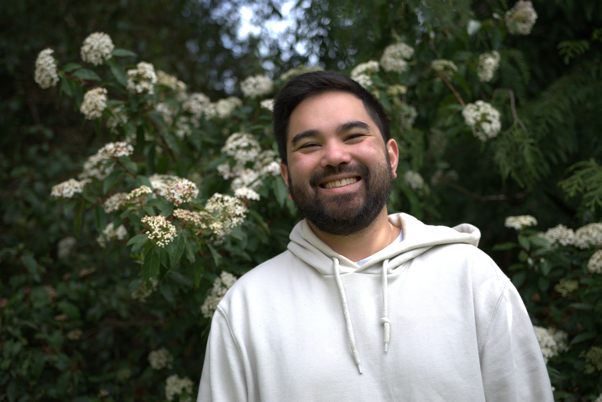

About Me

Hobbies
I am a man of many interests and hobbies. I have so many hobbies that my wife often makes fun of me for it. I love things that are creative and allow me to express myself in different ways.
- Cooking (click here for my favorite recipe)
- Video Games
- Photography
-
Music
- Guitar
- Harmonica
- Saxophone
- Bass
- Djing
- Fish Keeping
- Woodworking
Goals
When I was younger, I always wanted to create and build things. This
curiosity has driven me to pursue a career in computer science, where
I can combine my passion for technology with my creativity.
My current goal is to finish school and start my career as a computer
scientist and hopefully make a positive impact in the field.
Skills
I have experience with various programming languages and technologies, including Python, Java, C++, and PostgreSQL. I have done a little bit of work with web development as well (though very limited).
Technology Skills
- Python
- Java
- C++
- PostgreSQL
- HTML/CSS
- JavaScript
Soft Skills
- Problem Solving
- Team Collaboration
- Project Management
- Communication
- Customer Service
Contact
You can reach me via email at